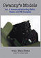

Please visit our sponsors' shops to fill all your modeling needs.

They're back!
I had wanted to have these sets ready for you back in mid-November but things happened. We had problems sourcing the crystal packs for the larger sets and then the production guy's wife had a baby right in the middle of the whole run and let me tell you childbirth can derail a program like nothing else. So please, accept my apologies for the tardiness of this release. What we have here for you are all the previously released DVD sets in hi-def with the addition of a 4-volume set with a discount price. This is a limited release. I did not order enormous quantities of these DVDs so do not dilly-dally, once they are gone ..... That's it, nothing more until maybe next Christmas.
Basic Model Building Skills & the P-40K. 12/20/06

Swanny's Models is proud to announce the release of the first in a series of instructional modeling DVDs. This DVD will take the modeler from the first parts preparation steps all the way through decaling and basic weathering. The primary purpose of this video is to assist the new modeler in achieving good results early. You can follow this link for more information on the video and ordering information.
Advanced Modeling Skills: Resin & PE cockpits.
Volume Two from Swanny's Models takes you through the complete process of building and detailing a resin aircraft cockpit. All steps are covered from initial washing to pour stub removal, painting and assembling a quality resin cockpit. Next the modeler goes through a similar process with a photo etched cockpit. Here the process of annealing the frets are covered along with how to remove parts without immediately losing them. Swanny shows you how to paint and assemble an acetate instrument panel and how to attach small PE detail pieces. In addition to all this the video set includes a bonus segment on working with vacuform canopies and there is more
Advanced Modeling Skills; Vacuform & NMF

The adventure continues at Swanny's Models. This time around we take a look at working with a vacuform conversion kit. This video takes the modeler through all the steps of learning how to work with vacuform model parts, resin and photo etched parts are revisited and the process of achieving a realistic natural metal finish utilizing lacquer based paints is covered in addition to some other goodies. Here you can purchase your copy of Advanced Modeling Skills: Vacuform Conversions & NMF. 7/1/09
Advanced Modeling Skills: Salt Chipping & Water Dioramas

This model building production will guide you through every step necessary and clearly list every component needed to achieve a stunning end result worthy of any competition table. You no longer need to worry about modeling water or creating extreme wear effects on your model, Swanny reveals all right here for your benefit. This DVD set does not have any regional coding so will play on any DVD or Blu-Ray player anywhere in the world.